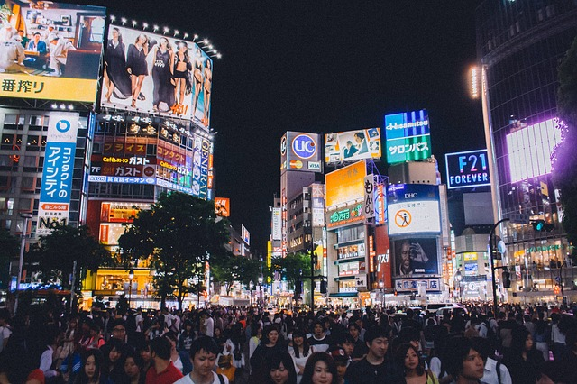

Island Of Japan
Tokyo
Visit the very robust and technologically advanced city of Tokyo, Japan where you can walk through the Shibuya Crosswalk to get to the many fun tourist destinations or ride the bullet train to get there!
Kyoto

Visit the city of Kyoto, Japan the city where the famous original Nintendo Headquarters is and it is also famous for a famous Shinto Shrine Architecture bridge.
Kawaii Comments
Bill Gates: "Tokyo was my Favorite place to go on vacation because I'm Always impressed with the inivations and technology in this city.
Alex Peterson: Going to Tokyo was one of the best places I've ever went on vacation to but Kyoto was much more fun for me especially because I'm a Huge Nintendo Fan/Gamer myself.
Mark Hammill: Japan is a Fantastic country to visit I always visit there every Spring on vacatoin to calm down and relax before I act for the next big movie/TV show.